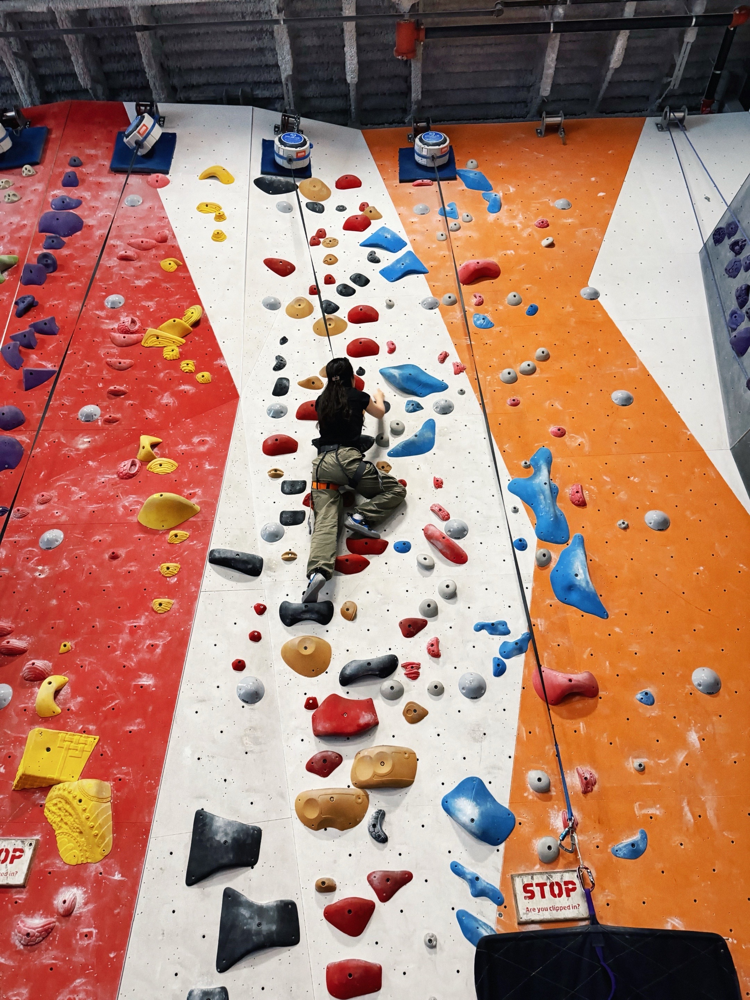
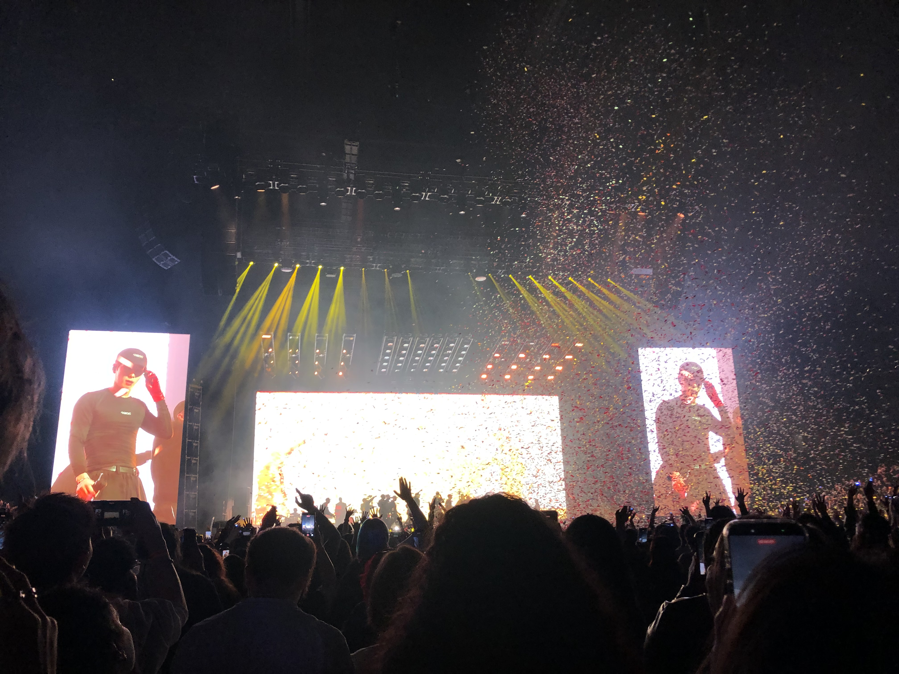

Zihan Hei
Statistics · Biostatistics · AI for Health
I am an undergraduate statistics student at Binghamton University working across bioinformatics, mental health evaluation, mixed-methods research, and data visualization. I am especially interested in biostatistics, AI-related health research, cancer biomarker discovery, statistical learning, and reproducible data science.
Current focus
- Cancer biomarker discovery and RNA-seq validation
- Health information avoidance and political psychology
- Mental health workshop evaluation
- Interactive and reproducible research tools
About me
My work combines statistical modeling, machine learning, survey design, mixed-methods analysis, and interactive data visualization to address questions in public health and healthcare. I enjoy building reproducible workflows and accessible research tools using R, Python, Quarto, R Shiny, Observable JS, Qualtrics, and GitHub.
Research at a glance
Selected work
Biomarker discovery
Differential expression, GSEA, and cross-study validation for chemo-immunotherapy response research.
FRI data infrastructure
Qualtrics, Google Apps Script, and R Shiny workflows supporting dissemination tracking and program evaluation.
Peer mentor guide
Co-authored an open-access Quarto guide supporting reflection, self-awareness, and leadership development.
Skills: current strengths and learning goals
This interactive chart is a personal development snapshot rather than a formal proficiency measure. Hover over points to compare scores, and use the Plotly toolbar to zoom, reset, or save the chart.
Research journey
Endometriosis, vaccine hesitancy, reproductive health, survey research, and poster presentations.
R peer mentoring, promotion and prevention mindsets, zero-sum beliefs, and health information avoidance.
Chemo-immunotherapy biomarker validation, deep learning, and reinforcement learning projects.
FRI data infrastructure and mental health workshop evaluation.
Tools and platforms
These tools are grouped by how I use them across data analysis, visualization, reproducible research, survey design, and health-focused projects. Hover over a logo to see its name and category, and use the Plotly toolbar to pan, zoom, reset, or export the network, and double-click anywhere on the plot to return to the original view.
Beyond research
Outside of research and coursework, I enjoy climbing, exploring photography, and experiencing live music.

Climbing
I enjoy climbing as a way to challenge myself, stay active, and step away from the screen.
Photography
Photography gives me a different way to observe and capture the places, people, and moments around me.

Live music
I enjoy going to concerts and discovering new music—one of my favorite ways to recharge outside of academics.